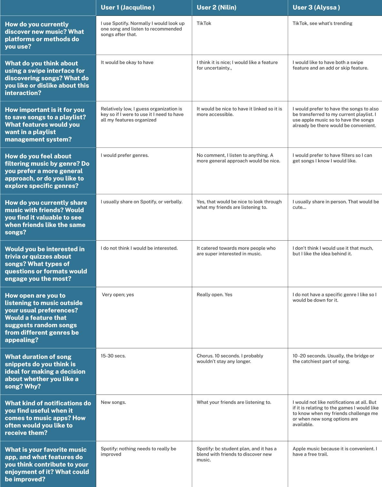
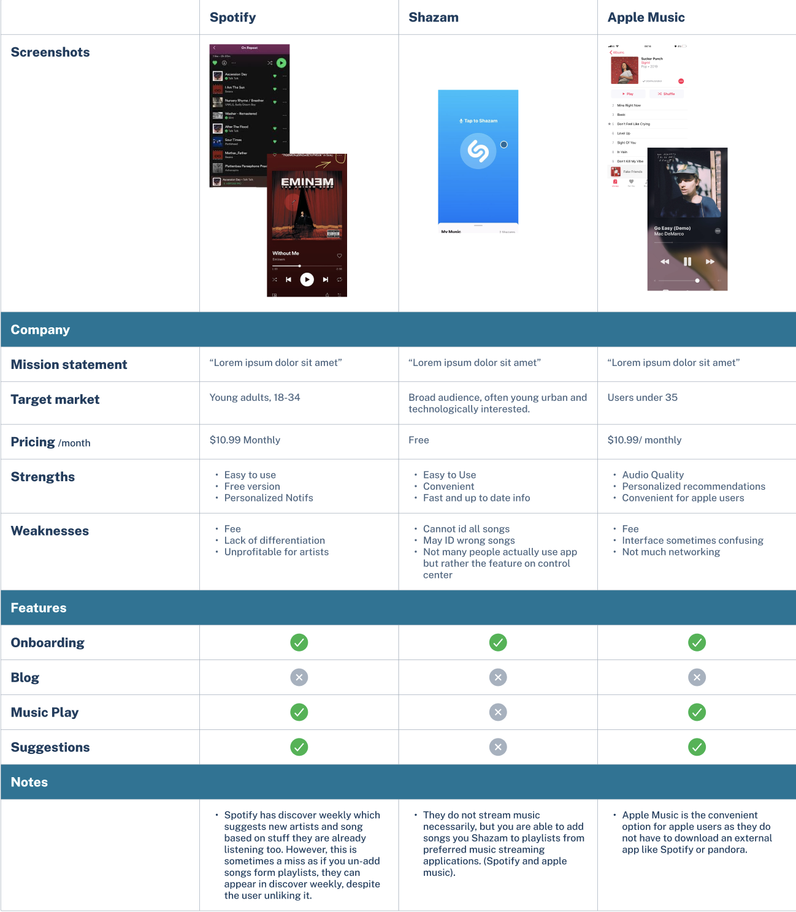
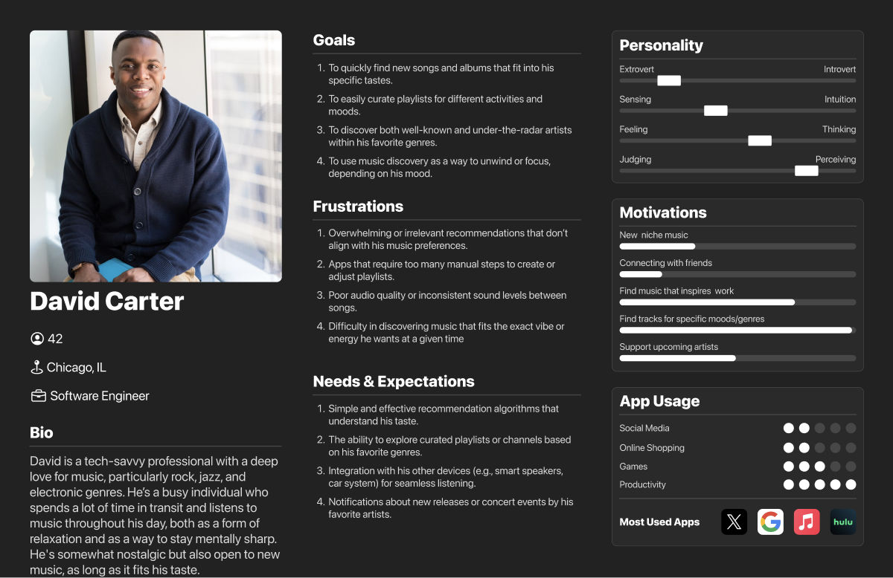
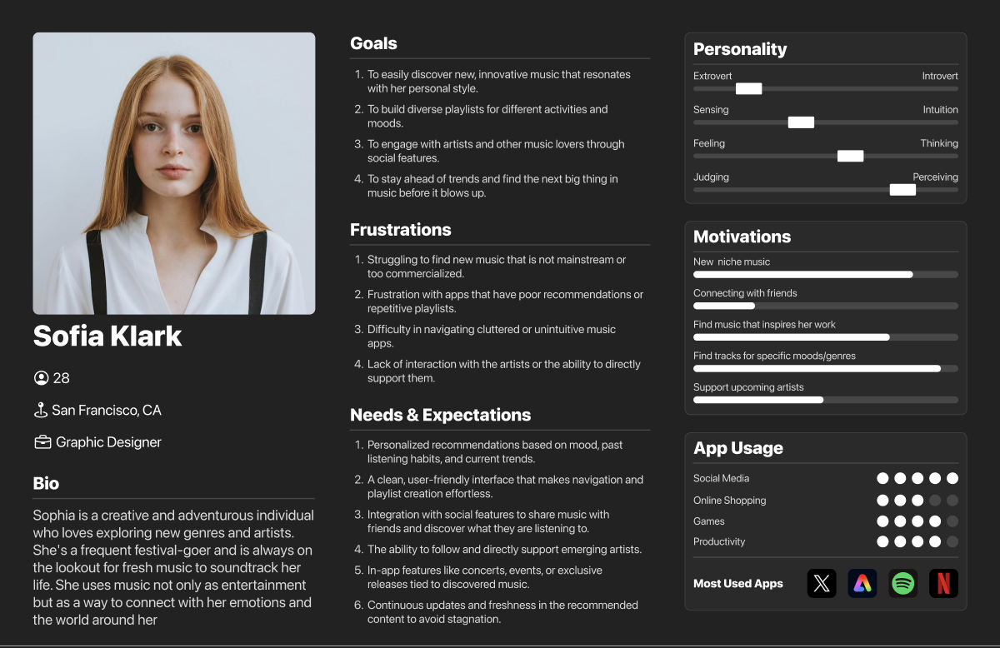
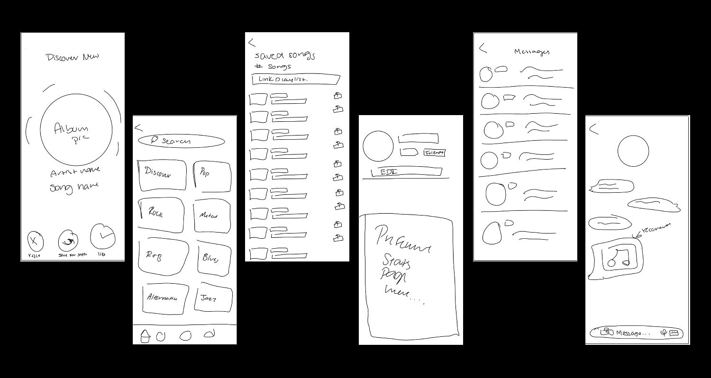
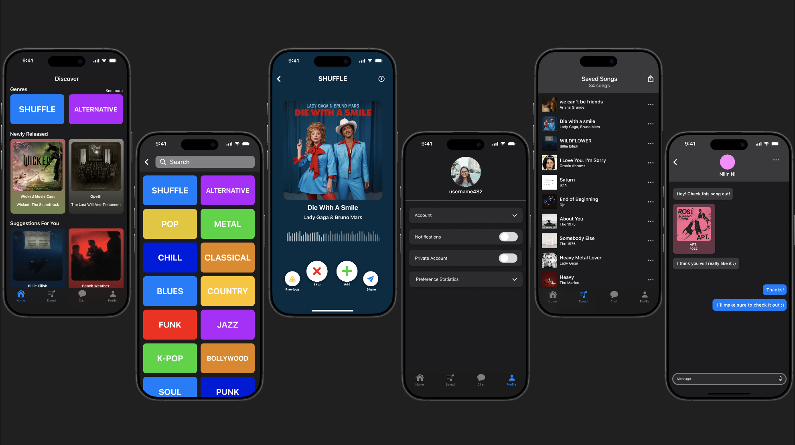

Click outside image to close
Sonar is a conceptual music discovery app designed to simplify how users find new music that matches their taste.
Problem Statement:
Music discovery often feels overwhelming, with existing algorithms lacking personalization and making it difficult for users to find songs that genuinely resonate.
To address this, I designed Sonar, an interactive prototype that makes music discovery more engaging and personal. Using a familiar swipe interaction, users can listen to short previews and quickly decide what they like. Liked songs are automatically saved to a playlist that can be exported to their preferred streaming platform.
Outcome:
Through this project, I translated a broad concept into a functional mobile app design while strengthening my skills in mobile usability, interaction design, and the UI/UX workflow. Click here to view the prototype
Mapped core tasks like browse, search, and queue, then iterated quick wireframes to validate layout and control placement.


To guide the design of Sonar, I developed a few personas to represent potential users of the app. These personas helped me stay focused on user motivations and frustrations throughout the design process.


From the research insights, I set 3 clear design goals:
I sketched out low-fidelity wireframe to explore how a swipe-based flow could be applied to music discovery. These wireframe helped me visualize navigation patterns and experiment with where to place key features like song previews and save options.

Using the wireframes as a foundation, I built high-fidelity prototypes to bring the interface to life. The focus was on designing a minimal, visually appealing UI that supported fast navigation and music previews.

Through this process, I was able to translate a broad concept into a functional mobile app design. Sonar gave me the chance to practice applying the UI/UX workflow, experiment with creative interaction patterns, and strengthen my skills in mobile app usability and interface design.